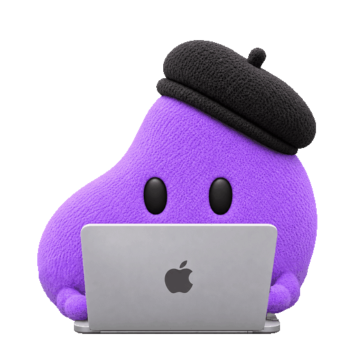
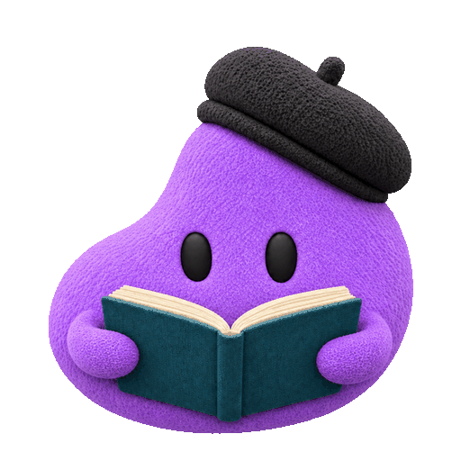

01
The family, aligned New, not in code
Each variant through its source box at 7× (224 px) with the guides: red, the window's vertical centre; blue, the eye line at 52 %. Below each, the same box at the real 32 px and at 64 px, playing and as its first frame.




